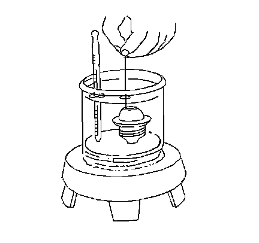

Thermostat Diagnosis
Thermostat Diagnosis
Tools Required
J 24731 Tempil Stick
Use one of the following procedures in testing for a malfunctioning thermostat.
Thermostat Test Procedure Using Tempil Sticks
The coolant thermostat can be tested using a temperature (tempil) stick. The temperature stick is a pencil like device. It has a wax material containing certain chemicals which melt at a given temperature. Temperature sticks can be used to determine a thermostat's operating range, by rubbing 87°C (188°F) and 97°C (206°F) sticks on the thermostat housing.
1. Use a tempil stick in order to find the opening and the closing temperatures of the coolant thermostat.
^ J 24731-188 tempil stick melts at 87°C (188°F). The thermostat should begin to open.
^ J 24731-206 tempil stick melts at 97°C (206°F). The thermostat should be fully open.
2. Replace the coolant thermostat if it does not operate properly between this temperature range.
Thermostat Test Procedure Using Glycol
Inspect the operation of the thermostat by hanging the thermostat on a hook in a 50/50 percent solution of DEX-COOL(R) and clean drinkable water.
In order to inspect if the thermostat valve is opening properly, perform the following test:

1. Completely submerge the thermostat in the glycol solution. The solution should be 11°C (22°F) above the temperature indicated on the thermostat valve.
2. Thoroughly agitate the solution. Under these conditions, the thermostat valve should open.
In order to inspect if the thermostat valve is closing properly, perform the following test:
1. Completely submerge the thermostat in a glycol solution. The solution should be 6°C (10°F) below the temperature indicated on the thermostat valve.
2. Thoroughly agitate the solution. Under these conditions, the thermostat valve should close completely.